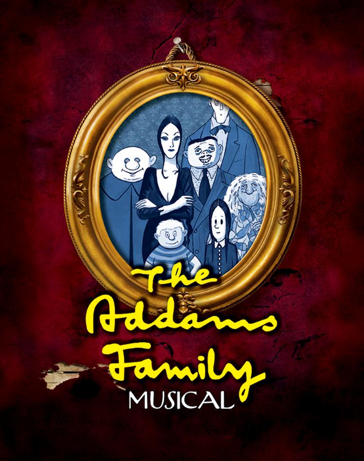

I played in the front ensemble in the North East High School Marching Band. It was pretty awesome. I also did Concert and Jazz band but that was kinda mid.
I did a few theatre productions in high school. I played Grandma in The Addams Family and that's when my life peaked.
